Project Overview
Project 1 is a project that colorizes the Prokudin-Gorskii Photo Collection. The Prokudin-Gorskii Photo Collection is a collection of photos taken by Russian photographer Sergei Mikhailovich Prokudin-Gorskii in the early 20th century. We take the digitized Prokudin-Gorskii glass plate images to automatically produce a color image with as few visual artifacts as possible. To do this, we extract the three color channel images, place them on top of each other, and align them so that they form a single RGB color image.
Approach
L2 and NCC
- L2: Compute the sum of squared differences between the two images, find the offset that minimizes the sum of squared differences
- NCC: Compute the normalized cross-correlation between the two images, find the offset that maximizes the normalized cross-correlation
- Both methods are used to align the three color channel images, and the L2 method is faster
Image Pyramid
- Exhaustive search will become expensive if the pixel displacement is too large, In this case, we need implement a faster search procedure such as an image pyramid.
- For the image pyramid, I downsample the image to 1/16 and then search for the best offset use L2 method, then upsample the image to 1/4 and search for the best offset again, repeat this process until reach the original size of the image.
Improvement
- It still has some visual artifacts, so we need to improve the quality of the image by using other method to align the three color channel images.
- Crop 2% of the image to remove the black border/noise, and then use L2 or Image Pyramid method.
- To reduce noise, I used the Canny edge detector, which use a gaussian filter to smooth the image, and then use the Sobel filter to find the gradient of the image to find the edge of the image.
Workflow
- Read the image and split the image into three channel images, r, g, b.
- Remove the black border/noise by cropping 2% of each images
- Reduce noise by using the Canny edge detector
- Find the best offset using L2 or Image Pyramid method base on the size of the image
- Align the three color channel images use np.roll
- Combine the three color channel images to form a single RGB color image
- Save the color image
Results
Here are some of the results of the colorized Prokudin-Gorskii Photo Collection.
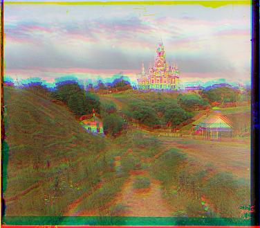
cathedral_original
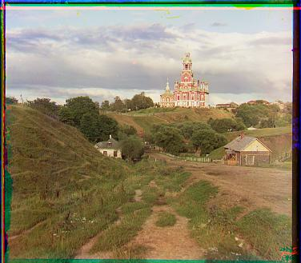
cathedral_Canny
offset red(12,3), green(5,2)

tobolsk_original
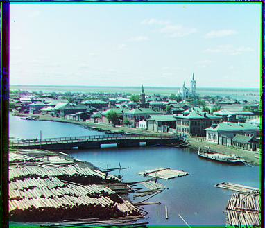
tobolsk_Canny
offset red(6,3), green(3,3)

monastery_original
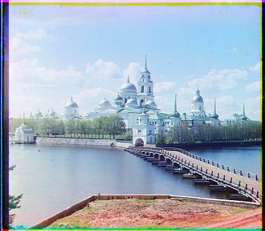
tobolsk_Canny
offset red(3,2), green(-3,2)

church_original
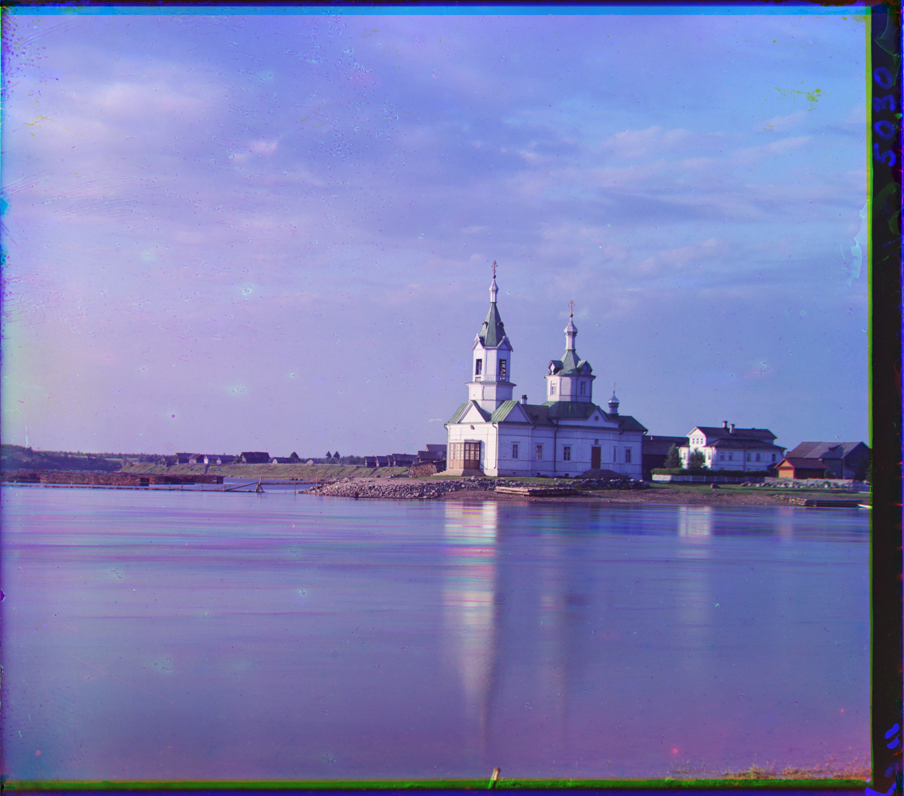
church_pyramid_aligned
offset red(58,-4), green(25,3)

emir_original
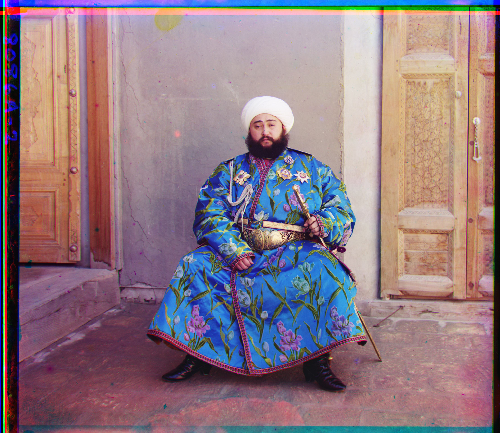
emir_pyramid_aligned
offset red(107,40), green(49,24)

harvesters_original
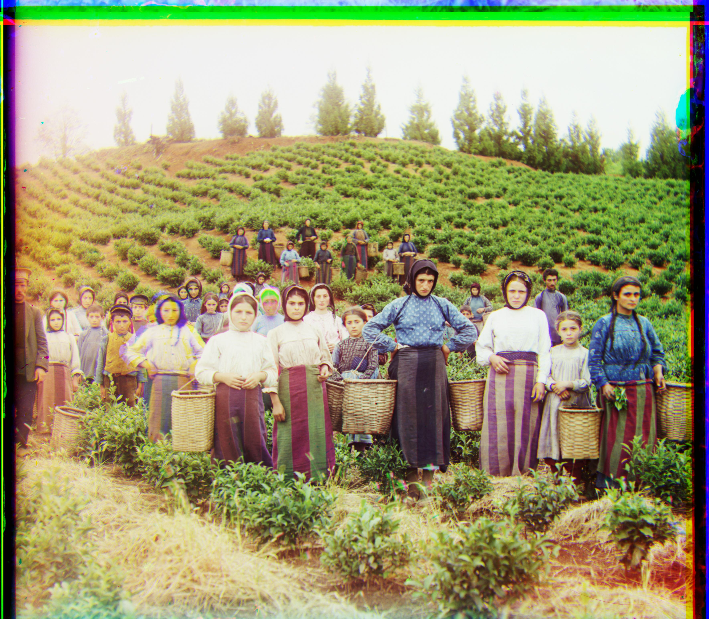
harvesters_pyramid_aligned
offset red(124,14), green(60,17)
icon_original
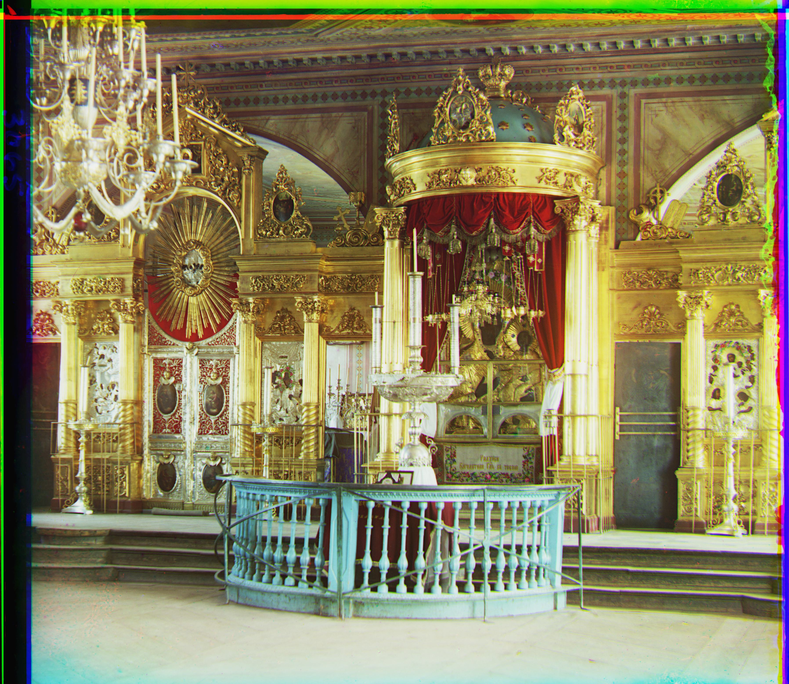
icon_pyramid_aligned
offset red(89,23), green(39,16)

lady_original
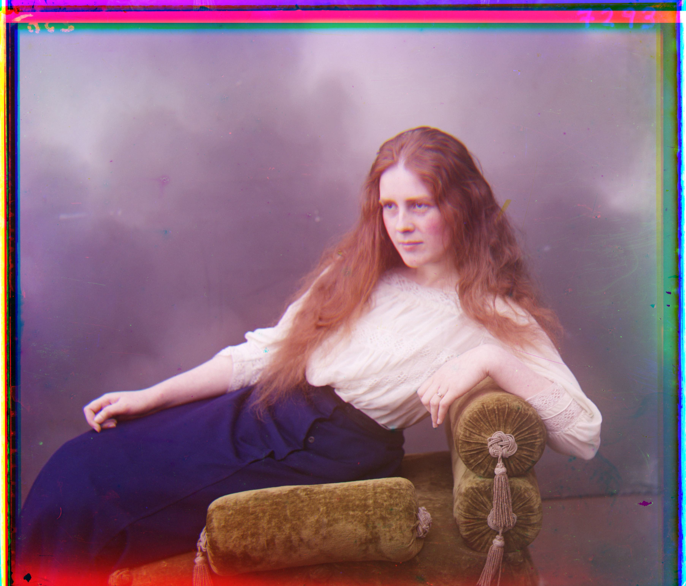
lady_pyramid_aligned
offset red(120,13), green(56,10)

melons_original
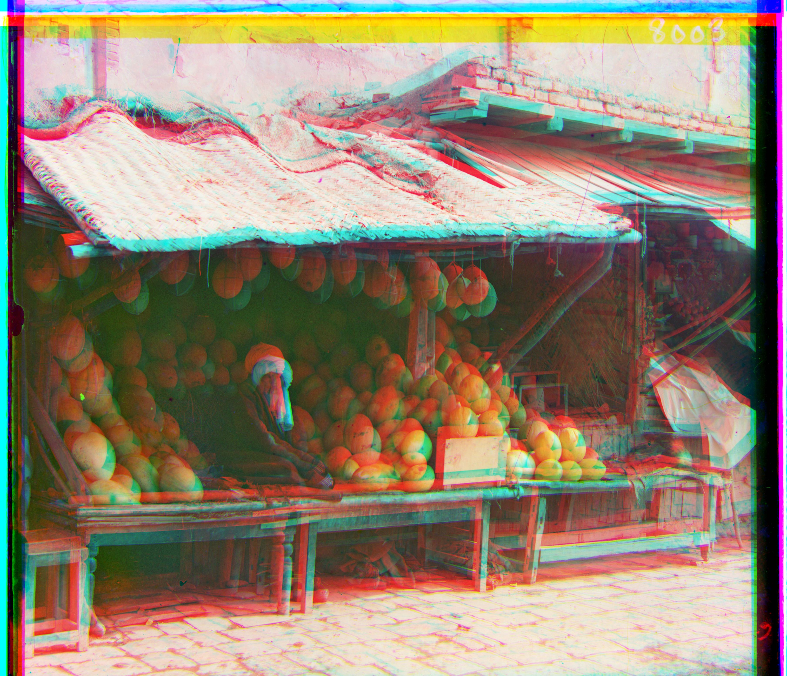
melons_pyramid_aligned
offset red(121,-23), green(80,10)

onion_church_original
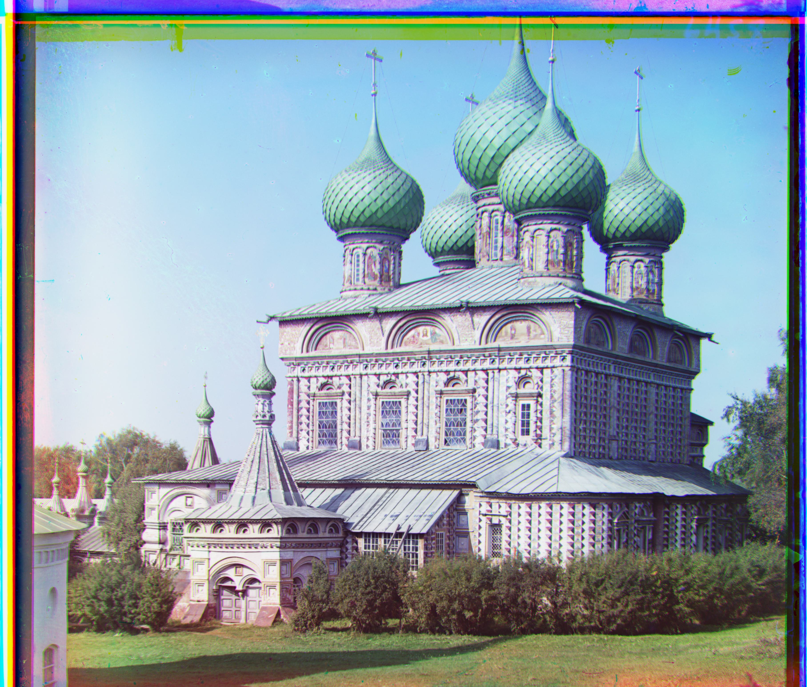
onion_church_pyramid_aligned
offset red(107,35), green(54,24)

sculpture_original
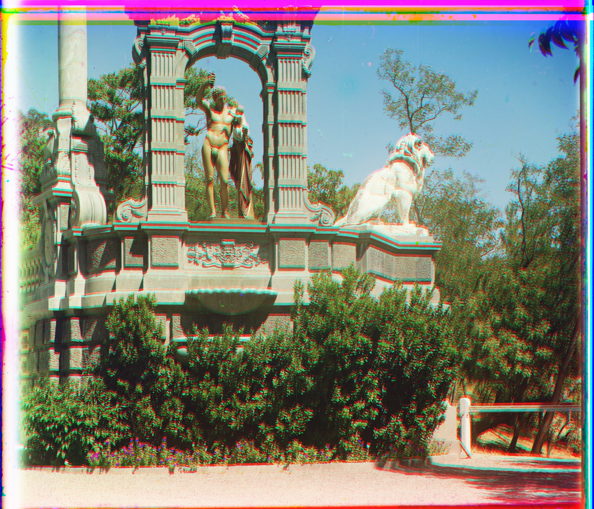
sculpture_pyramid_aligned
offset red(125,-24), green(33,-11)

self_portrait_original
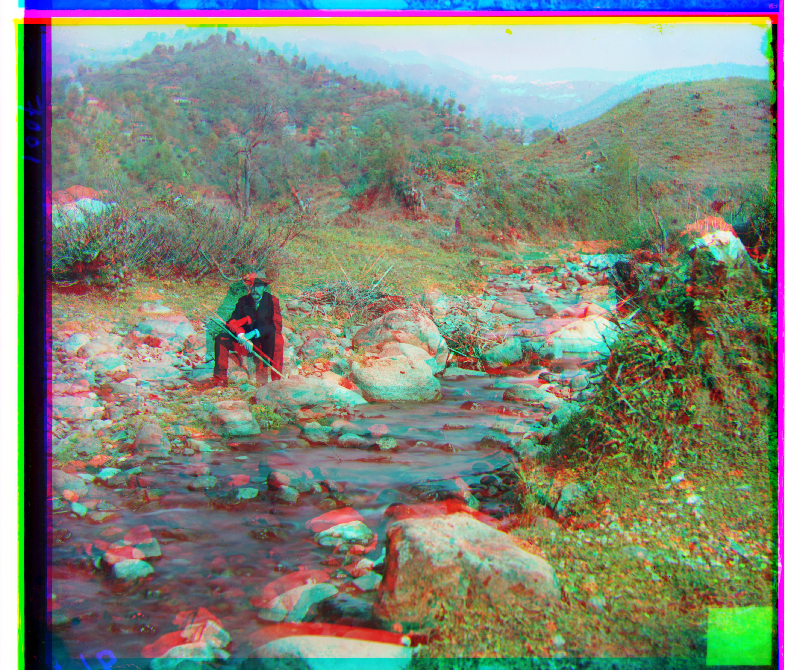
self_portrait_pyramid_aligned
offset red(112,-2), green(77,29)

three_generations_original
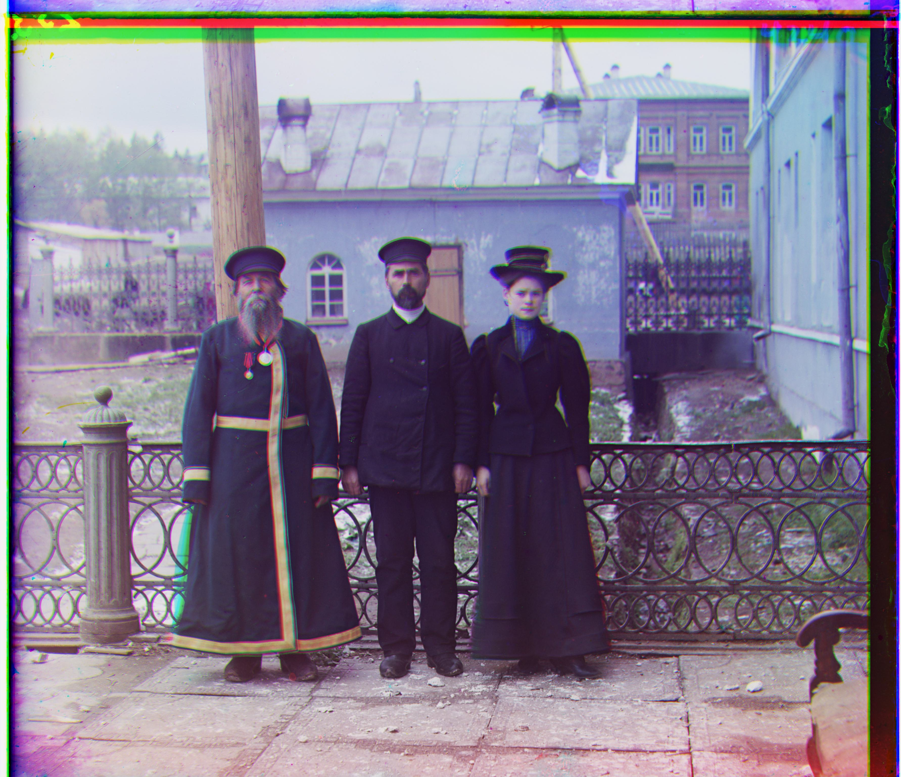
three_generations_pyramid_aligned
offset red(111,8), green(56,12)

train_original
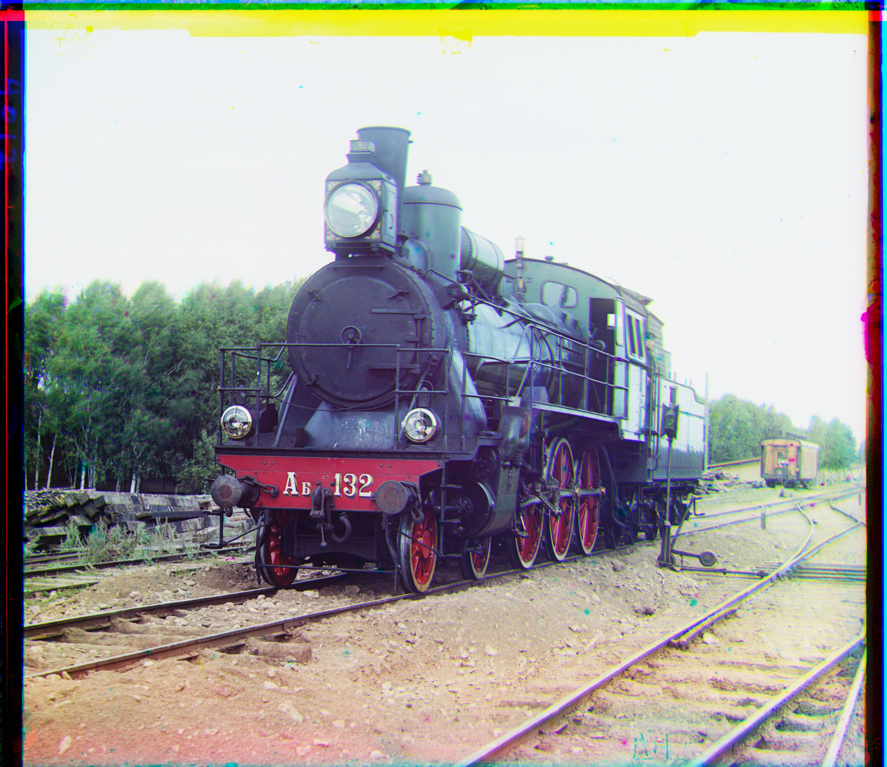
train_pyramid_aligned
offset red(85,29), green(41,0)